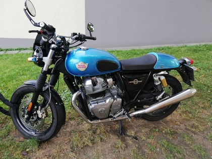

Royal Enfield Interceptor 650: dinámica y piezas performance del aftermarket
Cualidades dinámicas de la 650 y mapa de mejora con piezas performance: escape, admisión, motor, electrónica, suspensión, frenos y transmisión, con precios de referencia.